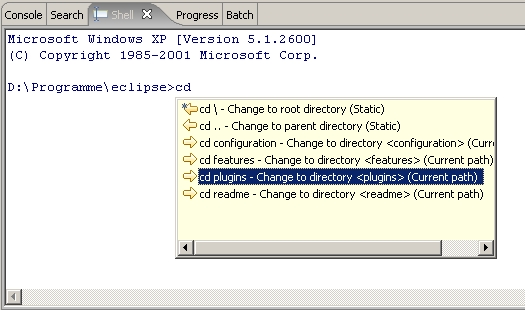
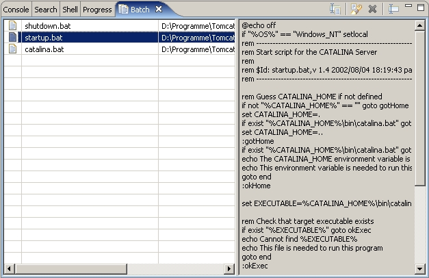
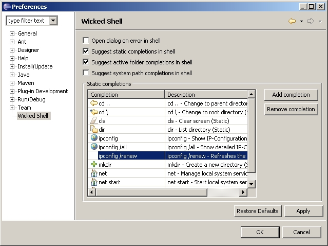
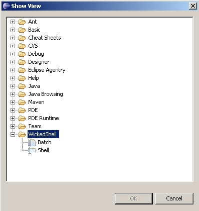

>> Screenshots
Wicked Shell - ShellView
The Shell view represents a shell with command completion.

Wicked Shell - BatchView
The Batch view provides an editable list of batch files.

Wicked Shell - Preferences
The Preferences allow customizing the command completion.

Wicked Shell - Views
Wicked Shell provides two more views - Shell and Batch.
